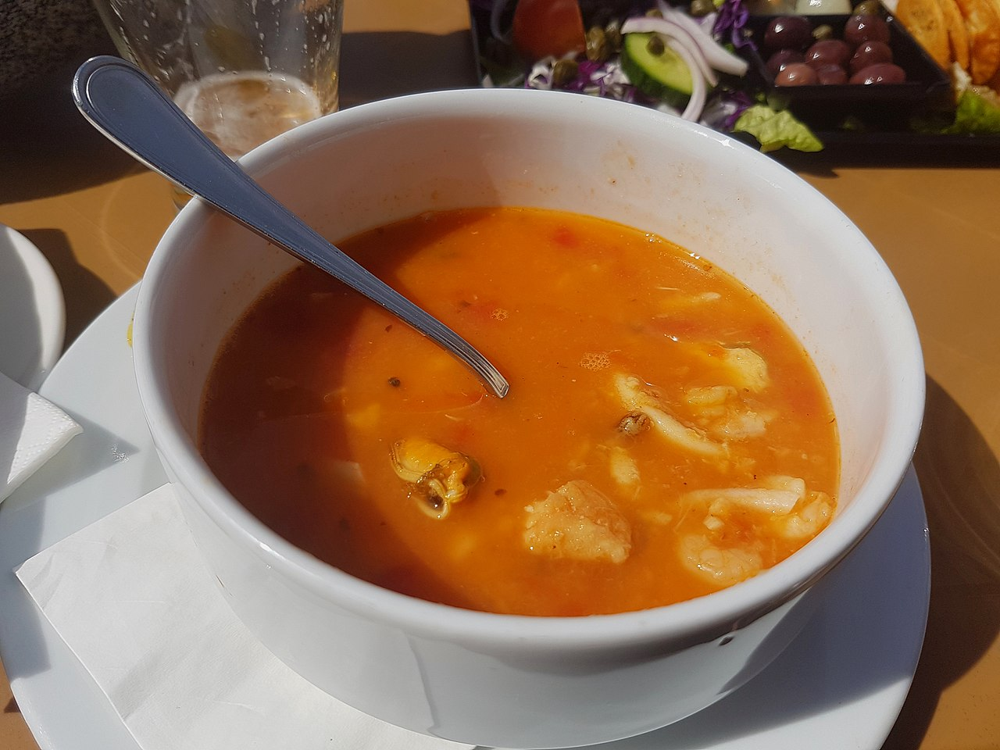

Aljotta
Description
Aljotta (“jo” as in “Yo!”) is a light fish soup with roots in french bouillabaisse and similarly refers to the method of serving the fish that are cooked in it. The most appropriate fish to use for both the stock and the accompanying meal are ‘clean’ white fish that don’t turn the broth cloudy, ideally stargazers, monkfish, red gurnard, and moray eels but also hake, mullets, cod and haddock. There are a some variants; restaurant versions could very well include lemon juice and shellfish which I don’t associate with aljotta. Rice eventually became a staple with it and how much you put in is up to you. I recommend just a little. In fact, there are no ingredient amounts; the picture should give you an idea of the density you’re going for. Fresh herbs are a must.
Ingredients
- Fish Stock (see 2.)
- Fish, raw
- Onions, roughly chopped
- Garlic, sliced or diced
- Tomatoes, chopped
- Frying oil/lard
- Extra virgin olive oil
- Marjoram
- Black pepper, optional
- Mint, small ammount (optional, use in moderation)
- Lemon wedge/juice (optional, use in moderation)
- Rice (use cautiously)
Steps
- Cook some rice and set aside. White short-grain is best but other types will do as long as it’s not starchy. Don’t use arborio or sushi rice.
- Prepare the stock, possibly the day before, by boiling fish and fish bones in a tall stock pot on medium heat for 1-2 hours. It’s customary to have loose chunks of fish in the soup so you can boil the fish and separate the meat as it starts to cook. As an example, the head, tail, skin and spine from the anglerfish fillet recipe were used to make stock, then half a fillet and meat that separated from the offal became part of the soup.
- In a pot, heat some oil on low heat and add in the onions. Saute until translucent.
- Add the garlic, tomato, herbs and salt if desired. Switch to medium heat, stirring occasionally until the water starts to boil.
- Add the fish and let simmer on low heat until the fish are cooked thoroughly, being careful not to break them. Turn the heat off and add the olive oil.
- Take the fish out to be served separately. They are traditionally served topped with olive oil and a squeeze of lemon with steamed vegetables.
- If you are using lemon juice or rice, add them to each serving according to your preference.
- Leave some for tomorrow. It always tastes better the next day.